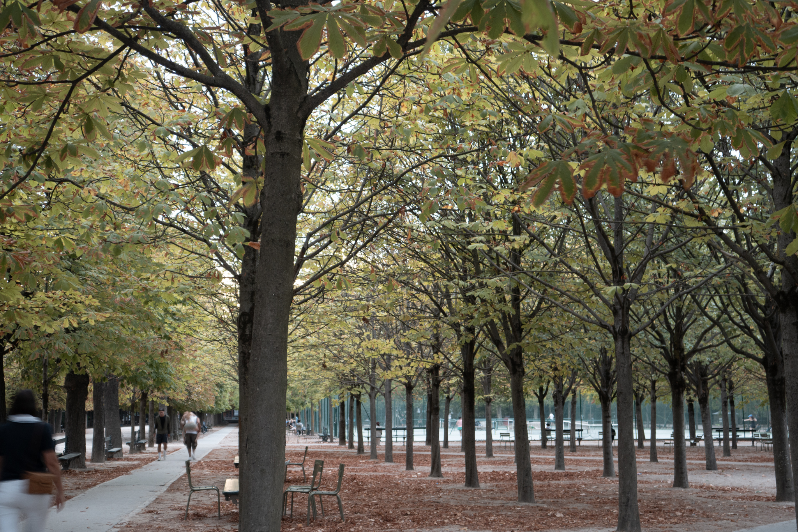
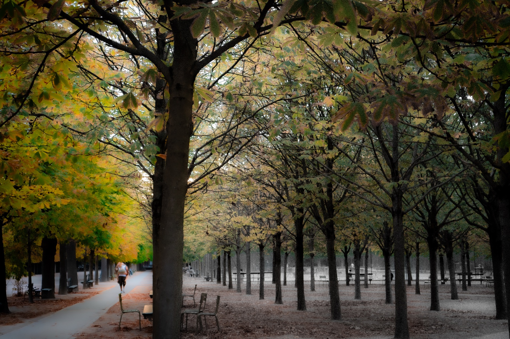

Before editing — Colour & context.

After editing — Colour & context.
01 / Making love feel colourful
On the left side of the edited photo, I increased saturation and vibrance around the two people. I wanted to show how being with people you love can make everything feel more colourful, almost like a painting.
02 / Softening the moment
I also reduced texture and clarity to give that side a softer, dreamlike feeling. I wanted it to feel less like a literal record of the scene and more like the feeling of being there.
03 / Creating the contrast
The right side, without the two people, is purposefully grey and gloomy. That contrast makes the warmth on the left stand out. I added grain to accentuate and deepen that feeling.